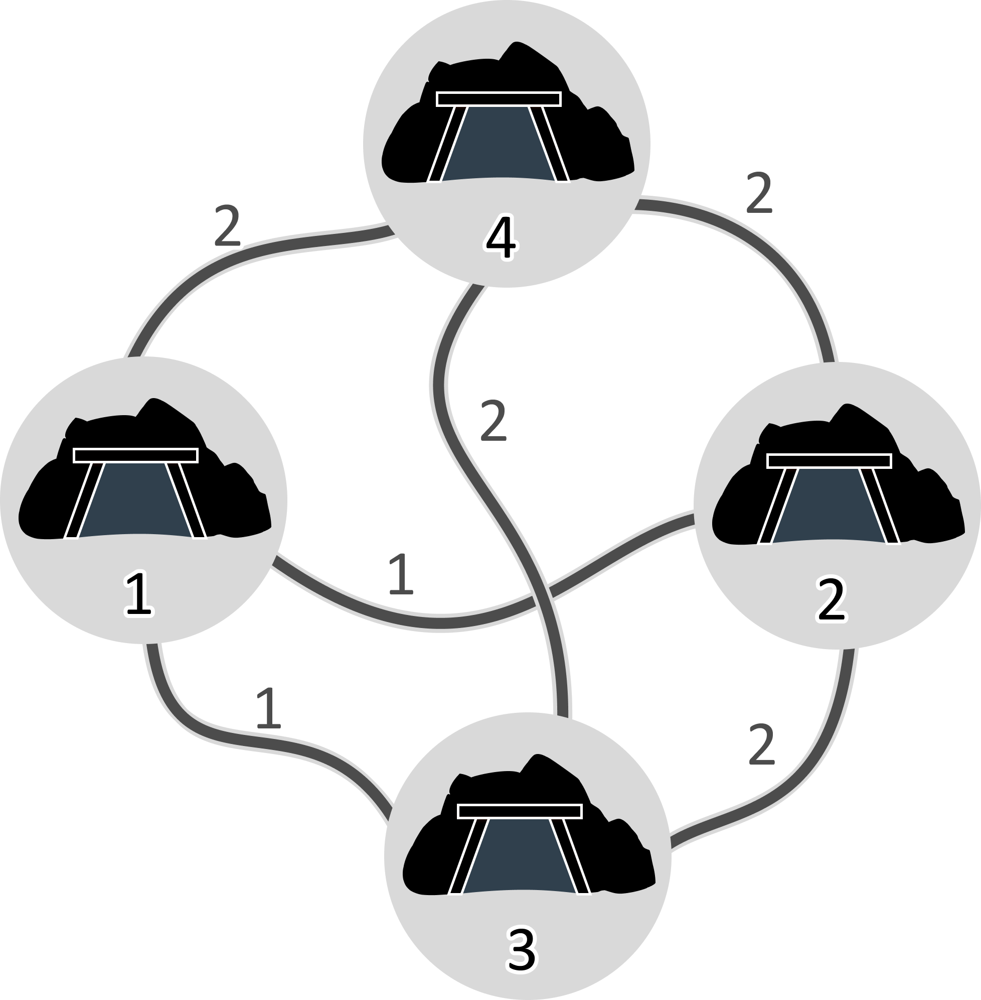
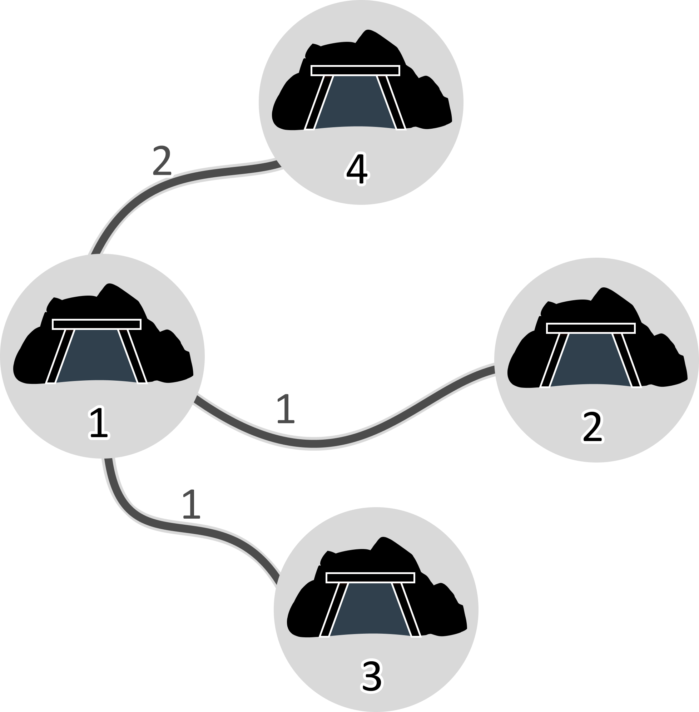

Pak Dengklek owns $N$ underground mining sites numbered from $1$ to $N$. For each pair of different sites $u$ and $v$, Pak Dengklek can build a tunnel connecting them which costs $C_{u,v}$. Pak Dengklek knows for sure that either $C_{u,v} = A$ or $C_{u,v} = B$, but Pak Dengklek does not know the values of $A$, $B$, and $C_{u,v}$.
Pak Dengklek has an underground measuring device. To use the device, Pak Dengklek first marks each site with a red, yellow, or green color. Then, the device will compute the total cost required to build all possible tunnels connecting a yellow and a green site. The colors red, yellow, and green are represented by the numbers $0$, $1$, and $2$ respectively. In other words, if each site $i$ is marked with color $W_i$, then the device will compute the value of $\displaystyle\sum\limits_{W_u = 1} \sum\limits_{W_v = 2} C_{u,v}$.
Pak Dengklek wants to build one or more tunnels such that each pair of sites are connected, either directly or indirectly through a series of tunnels. However, the device can only be used at most $2000$ times. Help Pak Dengklek determine the pairs of sites that need to be connected, such that the total cost required is minimum. If there are multiple possible ways, you may output any of them.
This is an "interactive" problem. In this problem, you will interact with the judge's program through standard input (stdin) and standard output (stdout). See the following interaction carefully.
In the beginning, you will be given an integer $N$ with the following format:
N
Then, for not more than $2000$ times, you can output to the standard output with the following format:
? W1 W2 … WN
This means you marked site $i$ with color $W_i$, then used the underground measuring device. The values of $W_i$ must satisfy $0 \le W_i \le 2$. For each of the outputs, the total cost required (denoted by $T$) will be given by the device from input with the following format:
T
In the end, you have to answer by output with the following format:
! M u1 v1 u2 v2 ⋮ uM vM
This means you built $M$ tunnels numbered from $1$ to $M$. Tunnel $j$ connects site $u_j$ and site $v_j$.
If you did not connect all sites, did not find the minimum possible total cost, used the device more than $2000$ times, or provided input in the wrong format, you will get a "Wrong Answer" verdict. Your answer will be considered correct if you successfully connected all sites with the minimum possible total cost without using the device more than $2000$ times, and you will get full or partial scores.
In subtask 6, you can get partial scores. The formula used to determine your score depends on the number of times you used the underground measuring device. Suppose that you used the device $Q$ times. The score you get is calculated based on the following table:
| Condition | Points |
|---|---|
| $2000 < Q$ | $0$ |
| $1170 < Q \le 2000$ | $\lfloor 5 + \large\frac{2000}{Q - 1000} \rfloor$ |
| $1000 < Q \le 1170$ | $\lfloor 36 - 2^{\small\frac{Q - 1000}{40}} \rfloor$ |
| $Q \le 1000$ | $35$ |
In the following sample, $N = 4$, $A = 1$, $B = 2$, and $C_{u,v}$:
The mining sites and the costs to build each tunnel are illustrated by the following image.

| Input | Output | Explanation |
|---|---|---|
4 |
This means there are $4$ mining sites. | |
? 1 2 2 0 |
You mark site $1$ with yellow, sites $2$ and $3$ with green, and site $4$ with red. | |
2 |
The device computes the total cost required, which is $2$. | |
? 2 2 2 1 |
You mark sites $1$, $2$, and $3$ with green, and site $4$ with yellow. | |
6 |
The device computes the total cost required, which is $6$. | |
? 0 1 2 0 |
You mark site $2$ with yellow, site $3$ with green, and sites $1$ and $4$ with red. | |
2 |
The device computes the total cost required, which is $2$. | |
! 3 1 2 1 3 1 4 |
You build tunnels connecting the pairs of sites $(1,2)$, $(1,3)$, and $(1,4)$. You could also build tunnels connecting the pairs of sites $(1,2)$, $(1,3)$, and $(3,4)$ with the same total cost. | |
| (end) | (end) | The interaction ends, the answer is correct, and you get Accepted for this test case. |
All tunnels built are illustrated by the following image.

Always flush every time your program gives an output.
stdio.h (cstdio):fflush(stdout);
iostream:std::cout << std::flush;